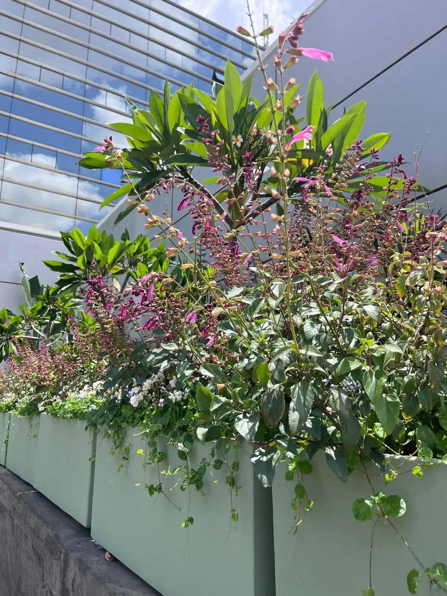
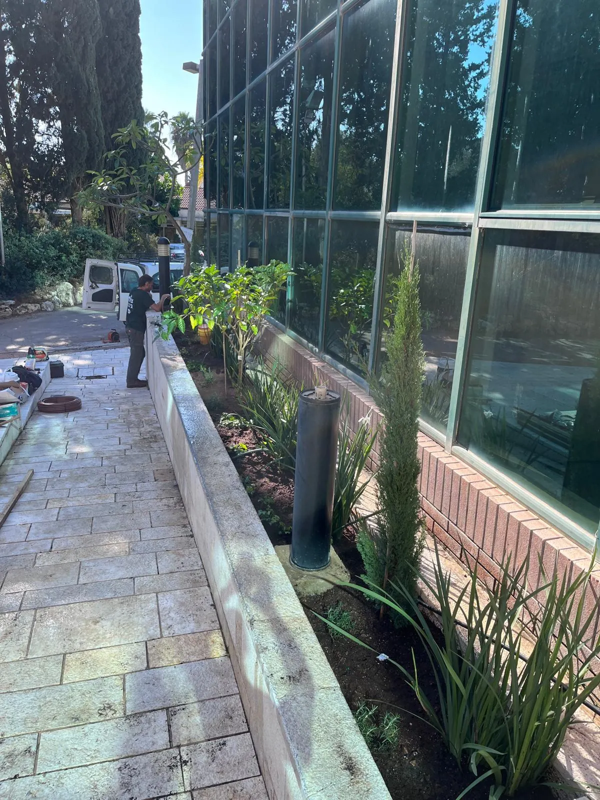

נוף וחורש / גינון ציבורי
גינון ציבורילמושבים, ליישובים ולמועצות
ביצוע, תחזוקה ופיקוח על שטחים ציבוריים וגינות קהילתיות, עם אותה גישה של צמחייה מקומית ואדמה חיה.


גינה ששייכת לכולם
גינה ציבורית היא המקום שבו יישוב נפגש: ספסל בצל של עץ, שביל שהילדים הולכים בו לגן, ערוגה שהשכנים שותלים בה יחד. אנחנו מביאים לשטחים האלה את אותה גישה שמובילה אותנו בגינות פרטיות: צמחייה מקומית שמכירה את הקיץ היבש, אדמה חיה והשקיה חסכונית.
איתי עובד שנים עם יישובים, מועצות ועמותות. הוא מרכז את הגינות הקהילתיות של מועצה אזורית חוף הכרמל, מנהל מקצועי בעמותת ונטעת, וריכז בעבר את המרחבים האקולוגיים ואת תכנית אקו־ישראל ב״חווה ואדם״. בדרך הזו הוא למד לעבוד לצד מהנדסי מועצות, ועדות תושבים ואנשי חינוך, ולהקשיב לכל מי שמשתמש במקום, לא רק למי שחותם על ההזמנה.
בין הגופים שעבדנו איתם: קיבוץ מעגן מיכאל, מועצה אזורית גזר וקבוצת מאיר אפרת. אנחנו מקימים ומשקמים שטחים ציבוריים וגינות כיס, מתחזקים לפי תוכנית עבודה עם דיווח מסודר, ומלווים תושבים בהקמה של גינה קהילתית, מהשתילה הראשונה ועד שהיא עומדת על הרגליים ומטופלת בידי הקהילה עצמה.
לקוחות ושותפים


- כרמי בת שלמה


ניסיון רלוונטי
- רכז גינות קהילתיות של מועצה אזורית חוף הכרמל
- מנהל מקצועי בעמותת ונטעת
- לשעבר רכז מרחבים אקולוגיים ותכנית אקו־ישראל ב״חווה ואדם״
- הכשרה של עשרות גננים צעירים בקורסים של אדמתי
פרויקטים ציבוריים שאפשר להציג, באישור
מה אנחנו עושים
- הקמה ושיקום של שטחים ציבוריים וגינות כיס
- תחזוקה שוטפת לפי תוכנית עבודה ודיווח
- פיקוח על ביצוע ועמידה בדרישות
- הקמה והפעלה של גינות קהילתיות עם התושבים
איש קשר
איתי שסטצקי · 054-767-0882
פנייה מקצועית
ספרו לנו על השטח, על היישוב ועל לוחות הזמנים. נחזור אליכם עם הצעה.